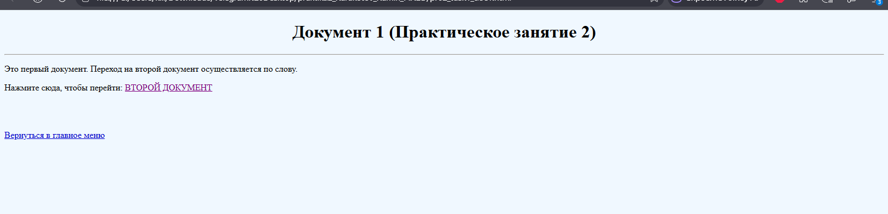
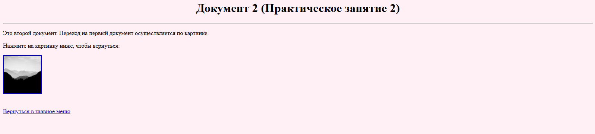
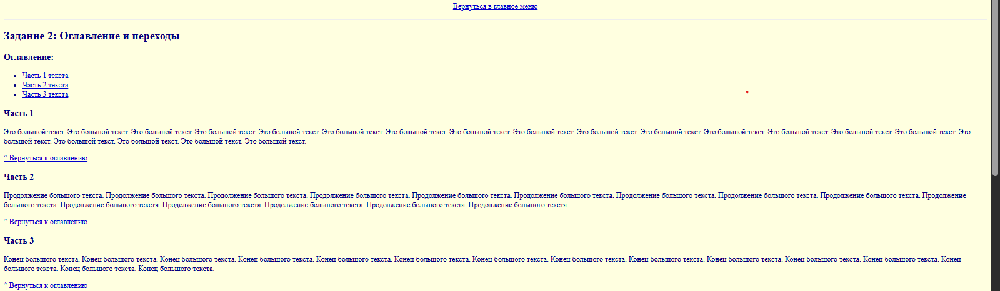
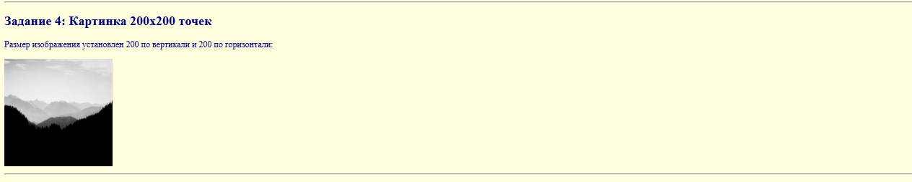
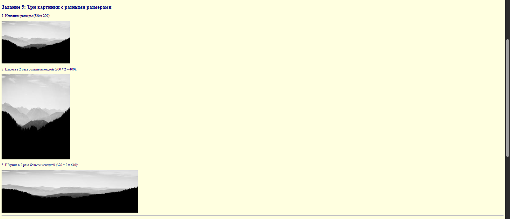
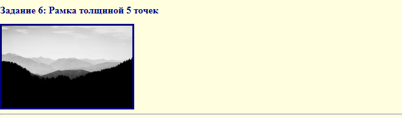
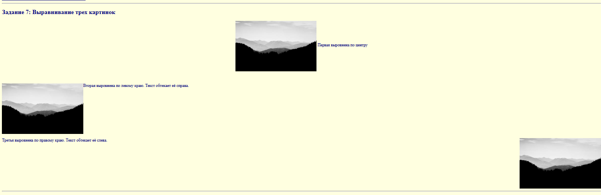
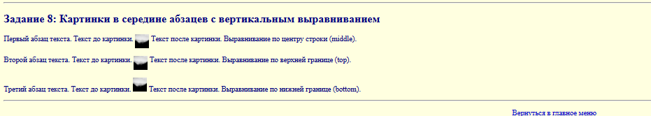

Тема: Работа с изображением и гиперссылками
Создали два HTML-документа. В первом сделали переход на второй документ по слову в тексте, во втором — переход на первый документ по картинке.


Создали HTML-документ с большим количеством текста. В начале документа сделали оглавление, каждый пункт оглавления — ссылка на определенную часть текста. Также сделали обратные ссылки на оглавление.

Создали HTML-документ, содержащий любую картинку. Картинку вставили тегом IMG с атрибутом SRC, имя файла — picture.gif.

Создали HTML-документ с картинкой и установили ей размер 200 точек по вертикали и 200 точек по горизонтали с помощью атрибутов HEIGHT и WIDTH.

Создали HTML-документ с тремя картинками: первая в исходном размере, у второй высота в 2 раза больше исходной, у третьей ширина в 2 раза больше исходной.

Создали HTML-документ с картинкой и установили ей рамку толщиной 5 точек с помощью атрибута BORDER.

Создали HTML-документ с тремя картинками: первую выровняли по центру, вторую по левому краю, третью по правому краю с помощью атрибута ALIGN.

Создали HTML-документ с тремя абзацами текста и вставили картинку в середину каждого абзаца. В первом абзаце выровняли по центру строки (ALIGN="middle"), во втором по верхней границе (ALIGN="top"), в третьем по нижней границе (ALIGN="bottom").